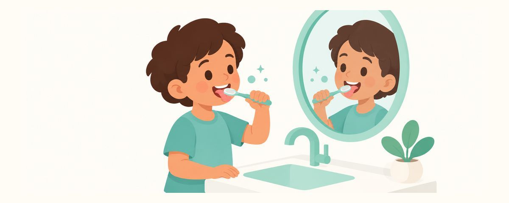

Bad Breath in Kids: Common Causes, Brushing the Tongue, and When to See a Doctor
Kids' bad breath usually starts in the mouth, from the tongue and plaque. Common causes, how to brush the tongue, the truth about mouthwash, and warning signs.
At a glance
- Bad breath usually starts with the tongue and plaque
- Gently sweep the top of the tongue forward with the brush
- Smelly discharge from one nostril? See a doctor right away
When you hug your child and catch a whiff of bad breath, you may wonder if something's wrong. You might even hear that it's from an upset stomach. But kids' bad breath usually starts in the mouth, and daily habits can often reduce it. Here are the causes, how to care for it, and signs that it's time to see a doctor.
It usually starts in the mouth
Bad breath happens when bacteria in the mouth break down bits of food and shed cells and make smelly compounds. Common causes in kids include:
- Leftover plaque: plaque left on the teeth, along the gumline, and between the molars
- Coating on the tongue: a white or yellowish film on the top of the tongue, especially toward the back
- Gum inflammation and cavities: swollen, bleeding gums, or cavity holes where food gets stuck
- Mouth breathing: when the mouth dries out, saliva can't rinse it as well
The tongue has a bumpy surface where lots of odor-causing bacteria live. If you brush only the teeth and leave the tongue, the smell may stay.
It's also common for breath to smell worse in the morning. Saliva drops during sleep, so the mouth isn't rinsed as well. If morning brushing and a glass of water make it better, there's no need to worry much.
Kids' bad breath used to be blamed on digestion. Now the mouth is checked first, then the nose and throat. Stomach causes are rare. If the nose is always stuffy, kids breathe through the mouth, which dries it out and makes bad breath more likely. Large adenoids at the back of the nose or allergies can often block the nose this way. In that case, brushing alone may not help much, so the nose needs a look too.
Brush gently, all the way to the tongue
- Brush the teeth twice a day with fluoride toothpaste. Use a rice-grain smear under age 3 and a pea-sized amount from age 3.
- After brushing the teeth, gently sweep the top of the tongue from back to front a few times with the toothbrush.
- Going too far back causes gagging. Only go as far as your child is comfortable with.
- If food often gets stuck between the molars, floss too.
- Make sure your child drinks enough water during the day.
The benefit of tongue cleaning comes mostly from studies in adults, so for kids it's seen as something that may help. That means there's no need to buy a special tool. The toothbrush you already use is plenty. Kids enjoy it when they can watch in the mirror and try it themselves, like "Time to wash your tongue's face!"
A common mistake is covering up the smell with mouthwash. Mouthwash only masks odor for a while. Finding out why the smell keeps coming back comes first.
Frequently asked questions
The smell is only in the morning. Is that okay?
Saliva drops during sleep, so morning breath is common. If it goes away after morning brushing, you can just keep an eye on it. If it lasts all day, look into the cause.
Do we need a separate tongue cleaner?
There's no evidence that any tool is better for kids. Gently sweeping the top of the tongue with your regular toothbrush is enough.
Won't mouthwash fix it?
Mouthwash only masks the smell for a while. It doesn't get rid of what's causing it. Start with careful brushing of the teeth and tongue and plenty of water, and if you'd like to use mouthwash, first ask your dentist whether it's right for your child.
Could it be from an upset stomach?
Stomach causes are rare. First focus on keeping the mouth clean, and if it continues, have the dentist check for cavities and gum problems.
We brush well, but the smell keeps coming back.
If the smell lasts for weeks despite good brushing, have the dentist check for cavities and gum problems. If the dentist can't find a cause, see your pediatrician.
When to see a doctor
- Smelly discharge from only one nostril: get care right away
- Breath that smells fruity or like acetone, along with drinking a lot and peeing often: get care right away
- Sleeping with the mouth open, a constantly blocked nose, or snoring: pediatrician or ENT
- The smell lasts for weeks despite good brushing: dentist
- The dentist can't find a cause: pediatrician
Get these at the right time
Enter your child's birth date (or due date) in the Tooth Calendar app and these articles arrive as reminders when they matter. Free, no sign-up.
Sources
- J Contemp Dent Pract · Risk Factors, Diagnosis, and Management of Halitosis in Children: A Comprehensive Review (2021)
- NHS · Bad breath (2025)
- RCH · Clinical Practice Guideline: Rhinitis and rhinosinusitis (persistent nasal discharge) (2025)
- PCH · ED Guideline: Foreign body - Nasal (2025)
The information in this app is for general educational purposes and does not replace professional dental care. Talk to a dentist about your child's condition.